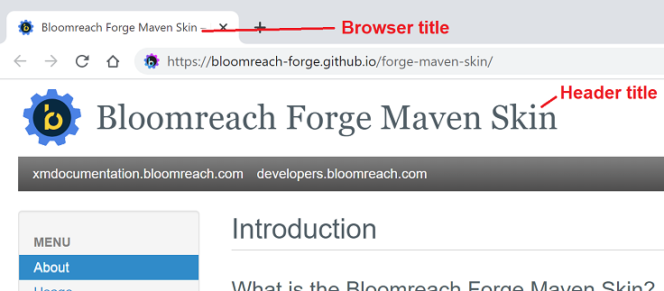

Bloomreach Forge Maven Skin

How to use the Forge Maven Skin
Maven 2 repository
The following repository should be available for your build:
<repository>
<id>hippo-forge</id>
<name>Hippo Forge maven 2 repository.</name>
<url>https://maven.bloomreach.com/repository/maven2-forge/</url>
</repository>Reference in site.xml
To apply the skin to your project's site, add this reference in the Maven site descriptor, normally at src/site/site.xml:
<skin>
<groupId>org.bloomreach.forge.mavenskin</groupId>
<artifactId>forge-maven-skin</artifactId>
<version>3.2.1</version>
</skin>Note: before version 3.0.0, the groupId was org.onehippo.forge.mavenskin.
Custom settings in site.xml
You can influence the rendering of the skin by following settings below the <skin> element. Note that these settings are optional and have defaults when not set.
<!-- customizable publish date format, defaulting to "yyyy-MM-dd" -->
<publishDate format="d MMMM yyyy" />
<custom>
<bloomreach>
<!-- Header title setting, defaulting to the project name from the pom -->
<title>Forge Maven Skin Title Override</title>
<!-- Render a google search box (no box when absent) -->
<googleSearch>
<!-- Optional setting on where to do the search (it will search on the current site if the sitesearch tag is absent) -->
<sitesearch>https://bloomreach-forge.github.io/forge-maven-skin/</sitesearch>
</googleSearch>
<!-- Add a 'Fork me on GitHub' ribbon -->
<gitHub>
<projectId>bloomreach-forge/forge-maven-skin</projectId>
</gitHub>
<!-- Configurable URL behind the Bloomreach logo, defaulting to https://bloomreach-forge.github.io -->
<logoUrl>https://www.mysite.com</logoUrl>
<!-- Two configurable breadcrumb items, defaulting to 'xmdocumentation.bloomreach.com' and 'github.com/bloomreach-forge'
Protocol https:// will be prepended for the URL -->
<breadcrumbLink1>www1.mysite.com</breadcrumbLink1>
<breadcrumbLink2>www2.mysite.com</breadcrumbLink2>
</bloomreach>
</custom>Note: before version 3.0.0, the custom element <bloomreach> was named <hippoSkin>.
Since the skin is based on Maven's Fluido Skin, there are also settings for Ohloh, GitHub, Twitter and Facebook. Please refer to the Maven Fluido Skin page for documentation.
All custom settings should be supported, but they should be configured in element <custom><bloomreach> instead of <custom><fluidoSkin>
Browser title and Header title

The browser title and header title can be customized. The browser title is constructed by prefixing the title set in the xml with the site title. Each page should have a title which is used to construct the browser title.
<document>
<properties>
<title>Page Title</title>
</properties>
...
</document>
The site title is the same for all pages on the documentation site and is set in the site.xml. The name attribute of the project tag is used for the site title: <project name="Title">.
If this attribute is not set the name set in the pom is used. As a last resort if the name in the pom is not set, the artifact-id is used.
The header title works the in the same way as the browser title, only without the postfix after the site title. There is one higher level to set the header title as explained in 'Custom settings in site.xml'. If this setting is missing, the same setting as the browser title is used.